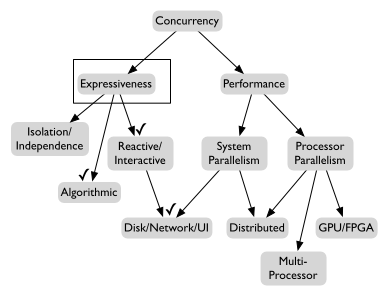

Concurrent software can be lumped into two main categories: software that uses concurrency for performance and software that uses concurrency for expressiveness.
Of course a single application might use concurrency for both reasons, but I think it's important to keep in mind that these are two totally separate things. The Charcoal project is principally focused on the expressiveness part of the picture.
In the event model, application code registers event handlers with an event dispatcher. Event handlers are composed of a procedure (function, method, subroutine, whatever) plus some condition under which that procedure should be run. The event dispatcher monitors the environment for events and runs handlers as appropriate.
The primary strength of the event model is that coordination between tasks (i.e. event handlers) is simple. Each handler runs to completion before the next handler can run. The programmer does not need to worry about a handler being interrupted in the middle of some tricky operation. This makes the management of shared resources much easier than with other concurrency models.
The event model is very widely used. All popular GUI frameworks use the event model for defining the behavior of mouse clicks and key presses. Many networking frameworks use the event model for handling incoming messages. I believe that the popularity of the event model is primarily a result of the (relative) ease with which shared resources can be managemed.
Implementations of the event model tend to have very low overhead in terms of memory wasted in the representation of task state and time wasted in scheduling tasks.
Event dispatchers can be implemented in user code in any general purpose programming language. There are very few tricky implementation issues to worry about.
The event model works best for simple tasks that do a small amount of computational work in response to a single event. A good example is the handling of a key press in a text editor. The event handler just has to add the character to the document data structure and maybe indicate that the screen should be redrawn.
Not all tasks are so simple, though. If a task needs to make several interactions with the environment in sequence or perform a long-running computation, things get messy with the event model. If a handler does not return to the dispatcher quickly, the application will become unresponsive, which is generally unacceptable.
Consequently, the application programmer must manually break complex and long-running tasks up into a sequence of "smaller" event handlers. This process makes the control flow of the application hard to follow. Even worse, it forces the programmer to explicitly encode control flow information as data that can be passed from one handler to the next. This process of breaking up tasks into pieces is called control flow inversion or stack ripping. As the violent terminology suggests, stack ripping makes code comprehension and maintenance much harder.
Event handlers cannot be run in parallel on multiple processors. I do not consider this to be a significant issue, because reactive/interactive programming and parallel programming are two entirely different topics. I think it is unfortunate that they get mushed together so often.
Threads are tasks that share memory (i.e. exist within a single process) and can be run simultaneously (i.e. in parallel). If the number of processors available is smaller than the number of threads that want to run, the system is responsible for interleaving the execution of the threads. In order to accomplish this interleaving, the system reserves the right to interrupt (or preempt) a thread at any time.
A couple of popular multithreading interfaces are Posix and Windows (win32).
In contract to event handlers, threads that run for a long time or wait for some input from the environment do not block the progress of other threads. This is huge, because it avoids the stack ripping nonsense that is necessary in the event model. Tasks can be written with normal control flow (loops, calls, exceptions, etc).
As I have mentioned, I am not terribly concerned with processor parallelism, but threads can be run in parallel.
By far the most important weakness of threads is that they make it very easy to introduce concurrency bugs like race conditions and deadlocks. Specifically the combination of by-default shared memory and preemption makes it extremely hard to guarantee that threads do not step on each others' toes through reads and writes to shared memory.
Most thread model implementations introduce a huge source of nondeterminism in the form of the thread scheduler. This tends to make it extra hard to debug concurrency problems with threads. This topic has been the subject of intense research over the decades and I am not aware of any really satisfactory solutions yet.
Threads tend to have relatively high memory overhead. Most popular threading implementations force application code to pre-allocate a large amount of stack space for each thread. Context switching between threads typically requires some interaction with the operating system which adds some time overhead.
Cooperative threads are a kind of compromise between events and (preemptive) threads. Like threads, multiple cooperative threads can be in progress simultaneously. Like events, only one cooperative thread can be running at any particular time. Cooperative threads run until they invoke a special yield primitive. Within a collection of cooperating threads, one cannot be interrupted to run another.
Cooperative threads (or slight variations on the theme) go by lots of different names, including coroutines and fibers.
It is generally much easier to avoid concurrency bugs with cooperative threads than preemptive threads because between yield invocations, cooperative threads do not need to worry about other threads interfering with their work.
Good implementations of cooperative threads solve the problem in the event model of one task waiting for some external action and blocking the progress of other tasks. What I mean by good implementations is that some care needs to be taken with system primitives like "read", so that only the calling thread is blocked, not all threads. This is doable, but requires a bit of fancy engineering.
The most important weakness of cooperative threads has to do with long-running tasks. With cooperative threads it is easy for such a task to starve other running tasks. The main way to combat this problem is to add more yield invocations to give other threads a chance to run. However this leads to a subtle problem. Yield is both a synchronization primitive and a scheduling primitive and these two things are in conflict. Getting a "just right" balance of yield frequency can be tricky, esecially in the context of long-term code mantenance.
Also cooperative threads cannot be run in parallel. Like I said before, don't care much about this one. There are a couple of research projects aimed at running cooperative threads in parallel. Seems like a sort of strange goal to me.